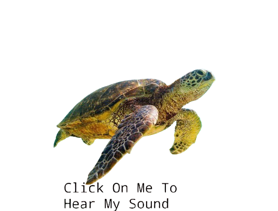

COMMON NAME: Green Sea Turtle.
SCIENTIFIC NAME: Chelonia mydas.
TYPE: Reptiles.
DIET: Herbivore.
GROUP NAME: Bale.
SIZE: Up to 1.5 meters.
WEIGHT: Up to 317 KG.

| Habitat | Green sea turtles inhabit tropical and subtropical waters worldwide, preferring shallow coastal areas coral reefs, seagrass beds, and lagoons. They are known to migrate long distances between feeding and nesting grounds. |
|---|---|
| Physical Description | Green sea turtles have a streamlined body with a smooth, oval-shaped shell that can grow up to 1.5 meters in length and weigh up to 317 kilograms. Their carapace is typically olive to brown in color, and they have four flippers adapted for swimming. |
| Life Cycle | Green sea turtles have a fascinating life cycle. They begin as hatchlings emerging from their nests on sandy beaches. After hatching, they make their way to the ocean, where they spend the early years of their lives floating in open ocean currents, often referred to as the "lost years." As they grow, they transition to coastal habitats, where they feed and mature. Female green sea turtles return to their natal beaches to nest, laying their eggs in the sand, while males typically remain in coastal areas. |
| Feeding | Green sea turtles are primarily herbivorous, feeding on seagrasses and algae. They use their powerful jaws to crop and tear vegetation, and their diet plays a crucial role in maintaining the health of seagrass beds and coral reefs. |
| Reproduction | Green sea turtle reproduction involves mating in water during the mating season. Females return to their birth beach to lay clutches of 100-200 eggs in buried nests. After 45-75 days of incubation, hatchlings emerge and navigate to the ocean, facing predation risks. Conservation efforts aim to protect nesting beaches and hatchlings for species survival. |